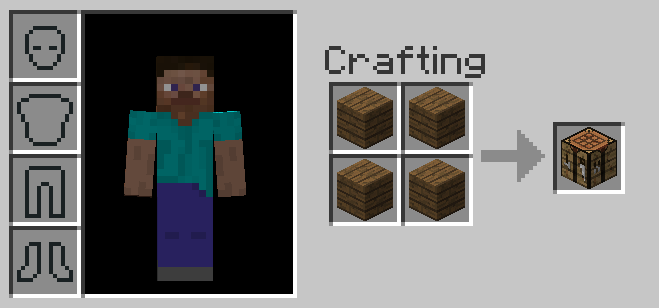

In Minecraft, you will use crafting to create many different blocks and items. Minecraft has tons of different crafting recipes. We will go over some
of the most important and basic crafting recipes for getting you started in Minecraft, starting with how to make a crafting table, which increases your
crafting space from a 2 x 2 grid to a 3 x 3 grid, wich many recipes require.
Crafting Table

To make a crafting table, you first need to get wood planks from the logs of any tree. Putting a log in your
2 x 2 crafting grid will give you 4 wooden planks. Putting one plank in each of the grid spots will allow you to craft a crafting table.
Place down the crafting table block and right click it to access it. Here is a 3 x 3 crafting grid which will be utilized in many recipes.
Tools
This image shows the crafting recipes, from left to right, top to bottom: Pickaxe, shovel, axe, hoe. This image shows the
recipe using diamonds, but this recipe can be recreated with other ores by switching out the diamonds for the other ores. The ores
you can use are stone, iron, gold, diamond, and netherite.
Armor
This shows the crafting recipes for the four armor pieces, a helmet, a chestplate, leggings, and boots. Like the tools,
this image shows the diamond variation of the crafting recipe, but it can also be made by replacing the diamonds with
leather, iron, gold, diamonds, or netherite.
Bread
Bread is one of the best food items in Minecraft. It fills a lot of your hunger bars and is simple to make. By growing
seeds, you will get wheat which is used in this simple recipe to craft bread.
Furnace
One of the most important blocks in Minecraft is the furnace. The furnace is used to smelt your ores from
raw ores into ingots, allowing you to use them for crafting. The furnace requires a heat source, such as coal, in order
to smelt things.
Chest
Another important block is the chest. Chests allow you to store items and blocks. Since your player
inventory is quite limited, having chests are very helpful to help store all the blocks and items you
make.